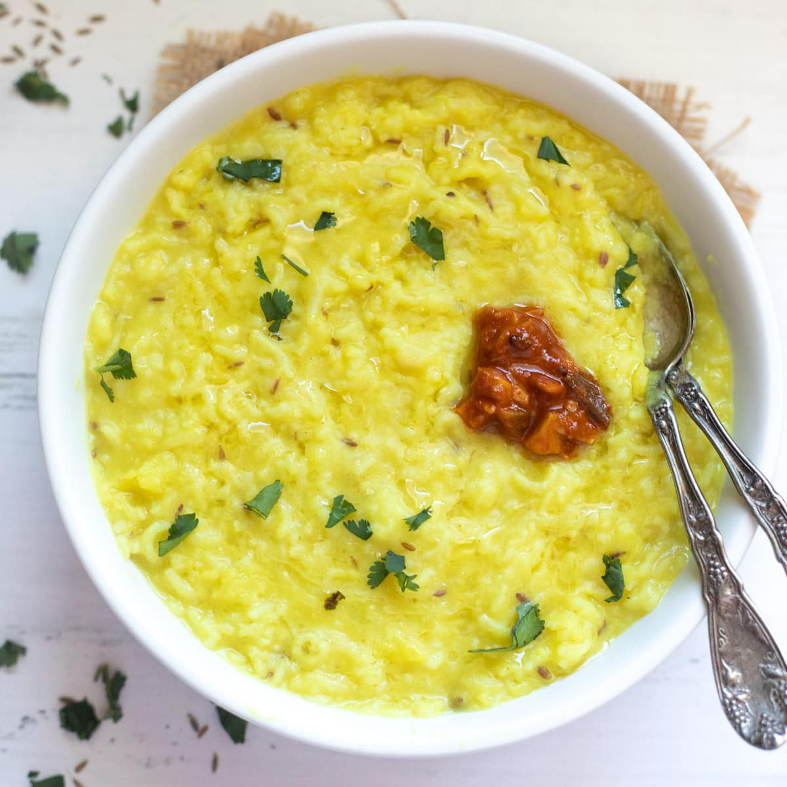

Khichdi

Khichdi is a versatile and comforting Indian dish that has been cherished for centuries.
It is a wholesome one-pot meal made by simmering rice and lentils together with an assortment of spices and vegetables.
The exact ingredients and proportions can vary regionally and based on personal preferences, but the basic components typically include rice, lentils
(such as moong dal or masoor dal), turmeric, cumin, and ghee or oil.
Khichdi is renowned for its simplicity, gentle flavors, and easy digestibility,
making it a popular choice for both everyday meals and during times of illness or fasting.
It's often served with a dollop of ghee or yogurt, along with pickles or papadums on the side,
creating a nourishing and satisfying meal that's enjoyed across India.
Ingredients
- Rice
- Lentils (such as moong dal or masoor dal)
- Turmeric
- Cumin
- Ghee or oil
Instructions
- Wash the rice and lentils thoroughly.
- Soak the rice and lentils in water for 30 minutes.
- Drain the water and keep the soaked rice and lentils aside.
- Heat ghee or oil in a pressure cooker.
- Add cumin seeds and let them splutter.
- Add turmeric powder and sauté for a few seconds.
- Add the soaked rice and lentils to the pressure cooker.
- Add water and salt to taste.
- Cover the pressure cooker and cook on high heat until the first whistle.
- Reduce the heat to low and cook for another 10-15 minutes.
- Turn off the heat and let the pressure release naturally.
- Open the pressure cooker and fluff the khichdi with a fork.
- Serve hot with ghee or yogurt.
arrow_backBack to Home